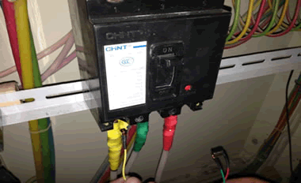
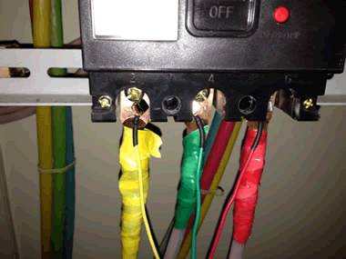

TRMS系统变电站失电报警装置安装调试教程
产品功能介绍
ZFP- eTP -Ⅰ型采集器主要包括失电缺相监测和与汇集器配合报警两项功能，具体如下：
1) 失电缺相监测
每只ZFP-eTP-Ⅰ型采集器可同时监测8回路的电压状态，每回路可由投切开关控制。回路电压正常时，采集器输出端为开路状态，多只采集器以并联方式连接至告警输出端，形成与门状态。一旦出现某回路通道一相或多相失电时，采集器输出端将输出闭合信号。
2) 与汇集器配合报警
采集器输出端与ZFP-DC-Ⅰ型汇集器输入端相连，汇集器监测到采集器输出的闭合信号时，蜂鸣器就地报警，同时通过语音拨号向新能量服务器报警，主站再以短信方式向用户手机报警。
适用范围
适用于解决用户电力信息采集装置不同厂家、不同接口、不同规约的产品之间相互通讯，可以实现变电站运行监测系统和电能管理系统内的各种现场智能设备和远方监控后台之间以串口、以太网、无线等多种方式的通信互联。
价值
具有强大的通信处理能力和现场监控能力，还具有实时性强、可靠性高、安装简易方便的特点。
失电报警硬件产品介绍
1. ETP-I型采集器
1) 基本参数
电源： AC220V
采样电压值：400V
可采集路数： 8路
2) 外型尺寸
245mm×70mm×40mm（长×宽×深）
3) 接线端子说明
4) 指示灯说明
当设备正常运行时指示灯无显示，如所接线路中有一路或几路失电时指示灯规律闪烁。
2. ETP-I汇集器
1) 基本参数
电源输入：AC220V（零线接入即可）
2) 外型尺寸
245mm×70mm×40mm（长×宽×深）
3) 接线端子说明
4) 指示灯说明
当设备正常运行时绿色指示灯有规律闪烁，如所接线路中有一路或几路失电时红色指示灯规律闪烁并伴有蜂鸣。
3. 连接电缆
1) 电压采样线
电压采样线用于3相电压采集
图1（电压采样线
2) 通讯电缆
通讯电缆是采集和采集器、采集器和汇集器之间通讯通道。
图2（通讯电缆）
3) 电源电缆
电源电缆是采集器的工作电源线。
图3（电源电缆）
现场安装、调试
进行安装调试工作前的注意事项：
- 必须持有电工证的人员方可进行以下的安装作业
- 所有安装人员在进入现场时必须穿戴好工作服，绝缘鞋
- 必须按要求办理好工作票，并经客户责任人签字确认
1. 采集器安装
1) 将采集器吸附在开关柜侧面
2) 插上电压采集回路插头
3) 电压采样线安装完成
4) 插上工作电源插头
5) 插上通讯线插头
采集器侧一个回路接线完成。（如有多条回路只要增接电压采样线即可）
2. 采样电压及采集器工作电源的搭取
1) 将电压取样磁钢按相序吸附在开关下桩头螺丝上

2) 3相3颗磁钢都吸附到位

3) 将采集器工作电源零线吸附在零排上